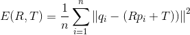
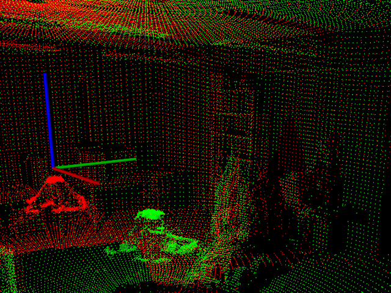

点云配准流程示例¶
使用迭代最近点算法(ICP)¶
迭代最近点算法（Iterative Closest Point，简称ICP算法）

代码实现¶
创建文件：iterative_closest_point.cpp
#include <iostream>
#include <pcl/io/pcd_io.h>
#include <pcl/point_types.h>
#include <pcl/registration/icp.h>
int
main(int argc, char **argv) {
// 定义输入和输出点云
pcl::PointCloud<pcl::PointXYZ>::Ptr cloud_in(new pcl::PointCloud<pcl::PointXYZ>);
pcl::PointCloud<pcl::PointXYZ>::Ptr cloud_out(new pcl::PointCloud<pcl::PointXYZ>);
// 随机填充无序点云
cloud_in->width = 5;
cloud_in->height = 1;
cloud_in->is_dense = false;
cloud_in->points.resize(cloud_in->width * cloud_in->height);
for (size_t i = 0; i < cloud_in->points.size(); ++i) {
cloud_in->points[i].x = 1024 * rand() / (RAND_MAX + 1.0f);
cloud_in->points[i].y = 1024 * rand() / (RAND_MAX + 1.0f);
cloud_in->points[i].z = 1024 * rand() / (RAND_MAX + 1.0f);
}
std::cout << "Saved " << cloud_in->points.size() << " data points to input:"
<< std::endl;
for (size_t i = 0; i < cloud_in->points.size(); ++i)
std::cout << " " <<
cloud_in->points[i].x << " " << cloud_in->points[i].y << " " <<
cloud_in->points[i].z << std::endl;
*cloud_out = *cloud_in;
std::cout << "size:" << cloud_out->points.size() << std::endl;
// 在点云上执行简单的刚性变换，将cloud_out中的x平移0.7f米，然后再次输出数据值。
for (size_t i = 0; i < cloud_in->points.size(); ++i)
cloud_out->points[i].x = cloud_in->points[i].x + 0.7f;
// 打印这些点
std::cout << "Transformed " << cloud_in->points.size() << " data points:"
<< std::endl;
for (size_t i = 0; i < cloud_out->points.size(); ++i)
std::cout << " " << cloud_out->points[i].x << " " <<
cloud_out->points[i].y << " " << cloud_out->points[i].z << std::endl;
// 创建IterativeClosestPoint的实例
// setInputSource将cloud_in作为输入点云
// setInputTarget将平移后的cloud_out作为目标点云
pcl::IterativeClosestPoint<pcl::PointXYZ, pcl::PointXYZ> icp;
icp.setInputSource(cloud_in);
icp.setInputTarget(cloud_out);
// 创建一个 pcl::PointCloud<pcl::PointXYZ>实例 Final 对象,存储配准变换后的源点云,
// 应用 ICP 算法后, IterativeClosestPoint 能够保存结果点云集,如果这两个点云匹配正确的话
// （即仅对其中一个应用某种刚体变换，就可以得到两个在同一坐标系下相同的点云）,那么 icp. hasConverged()= 1 (true),
// 然后会输出最终变换矩阵的匹配分数和变换矩阵等信息。
pcl::PointCloud<pcl::PointXYZ> Final;
icp.align(Final);
std::cout << "has converged:" << icp.hasConverged() << " score: " <<
icp.getFitnessScore() << std::endl;
const pcl::Registration<pcl::PointXYZ, pcl::PointXYZ, float>::Matrix4 &matrix = icp.getFinalTransformation();
std::cout << matrix << std::endl;
return (0);
}
输出结果¶
Saved 5 data points to input:
0.352222 -0.151883 -0.106395
-0.397406 -0.473106 0.292602
-0.731898 0.667105 0.441304
-0.734766 0.854581 -0.0361733
-0.4607 -0.277468 -0.916762
size:5
Transformed 5 data points:
1.05222 -0.151883 -0.106395
0.302594 -0.473106 0.292602
-0.0318983 0.667105 0.441304
-0.0347655 0.854581 -0.0361733
0.2393 -0.277468 -0.916762
has converged:1 score: 2.44826e-13
1 -3.25963e-07 -2.98023e-08 0.7
-1.45286e-07 1 1.30385e-07 -1.3113e-07
-2.23517e-07 1.11759e-08 1 -4.61936e-08
0 0 0 1
配准多对点云¶
参加代码示例
正态分布变换配准(NDT)¶
正态分布变换( Normal Distributions Transform )进行配准
用正态分布变换算法来确定两个大型点云（都超过 100 000个点）之间的刚体变换。正态分布变换算法是一个配准算法 , 它应用于 三维点的统计模型，使用标准最优化技术来确定两个点云间的最优的匹配，因为其在配准过程中不利用对应点的特征计算和匹配，所以时间比其他方法快，更多关于正态分布变换算法的详细的信息，请看 Martin Magnusson 博士的博士毕业论文“The Three-Dimensional Normal Distributions Transform – an Efficient Representation for Registration, Surface Analysis, and Loop Detection.”。
代码实现¶
#include <iostream>
#include <thread>
#include <pcl/io/pcd_io.h>
#include <pcl/point_types.h>
#include <pcl/registration/ndt.h> // ndt配准文件头
#include <pcl/filters/approximate_voxel_grid.h>// 滤波文件头
#include <pcl/visualization/pcl_visualizer.h>
using namespace std::chrono_literals;
int
main(int argc, char **argv) {
// Loading first scan of room.
pcl::PointCloud<pcl::PointXYZ>::Ptr target_cloud(new pcl::PointCloud<pcl::PointXYZ>);
if (pcl::io::loadPCDFile<pcl::PointXYZ>("./data/room_scan1.pcd", *target_cloud) == -1) {
PCL_ERROR ("Couldn't read file room_scan1.pcd \n");
return (-1);
}
std::cout << "Loaded " << target_cloud->size() << " data points from room_scan1.pcd" << std::endl;
// Loading second scan of room from new perspective.
pcl::PointCloud<pcl::PointXYZ>::Ptr input_cloud(new pcl::PointCloud<pcl::PointXYZ>);
if (pcl::io::loadPCDFile<pcl::PointXYZ>("./data/room_scan2.pcd", *input_cloud) == -1) {
PCL_ERROR ("Couldn't read file room_scan2.pcd \n");
return (-1);
}
std::cout << "Loaded " << input_cloud->size() << " data points from room_scan2.pcd" << std::endl;
// Filtering input scan to roughly 10% of original size to increase speed of registration.
pcl::PointCloud<pcl::PointXYZ>::Ptr filtered_cloud(new pcl::PointCloud<pcl::PointXYZ>);
pcl::ApproximateVoxelGrid<pcl::PointXYZ> approximate_voxel_filter;
approximate_voxel_filter.setLeafSize(0.2, 0.2, 0.2);
approximate_voxel_filter.setInputCloud(input_cloud);
approximate_voxel_filter.filter(*filtered_cloud);
std::cout << "Filtered cloud contains " << filtered_cloud->size()
<< " data points from room_scan2.pcd" << std::endl;
// Initializing Normal Distributions Transform (NDT).
pcl::NormalDistributionsTransform<pcl::PointXYZ, pcl::PointXYZ> ndt;
// Setting scale dependent NDT parameters
// Setting minimum transformation difference for termination condition.
ndt.setTransformationEpsilon(0.01);
// Setting maximum step size for More-Thuente line search.
ndt.setStepSize(0.1);
//Setting Resolution of NDT grid structure (VoxelGridCovariance).
ndt.setResolution(1.0);
// Setting max number of registration iterations.
ndt.setMaximumIterations(35);
// Setting point cloud to be aligned.
ndt.setInputSource(filtered_cloud);
// Setting point cloud to be aligned to.
ndt.setInputTarget(target_cloud);
// Set initial alignment estimate found using robot odometry.
Eigen::AngleAxisf init_rotation(0.6931, Eigen::Vector3f::UnitZ());
Eigen::Translation3f init_translation(1.79387, 0, 0);
Eigen::Matrix4f init_guess = (init_translation * init_rotation).matrix();
// Calculating required rigid transform to align the input cloud to the target cloud.
pcl::PointCloud<pcl::PointXYZ>::Ptr output_cloud(new pcl::PointCloud<pcl::PointXYZ>);
ndt.align(*output_cloud, init_guess);
std::cout << "Normal Distributions Transform has converged:" << ndt.hasConverged()
<< " score: " << ndt.getFitnessScore() << std::endl;
// Transforming unfiltered, input cloud using found transform.
pcl::transformPointCloud(*input_cloud, *output_cloud, ndt.getFinalTransformation());
// Saving transformed input cloud.
pcl::io::savePCDFileASCII("room_scan2_transformed.pcd", *output_cloud);
// Initializing point cloud visualizer
pcl::visualization::PCLVisualizer::Ptr
viewer_final(new pcl::visualization::PCLVisualizer("3D Viewer"));
viewer_final->setBackgroundColor(0, 0, 0);
// Coloring and visualizing target cloud (red).
pcl::visualization::PointCloudColorHandlerCustom<pcl::PointXYZ>
target_color(target_cloud, 255, 0, 0);
viewer_final->addPointCloud<pcl::PointXYZ>(target_cloud, target_color, "target cloud");
viewer_final->setPointCloudRenderingProperties(pcl::visualization::PCL_VISUALIZER_POINT_SIZE,
1, "target cloud");
// Coloring and visualizing transformed input cloud (green).
pcl::visualization::PointCloudColorHandlerCustom<pcl::PointXYZ>
output_color(output_cloud, 0, 255, 0);
viewer_final->addPointCloud<pcl::PointXYZ>(output_cloud, output_color, "output cloud");
viewer_final->setPointCloudRenderingProperties(pcl::visualization::PCL_VISUALIZER_POINT_SIZE,
1, "output cloud");
// Starting visualizer
viewer_final->addCoordinateSystem(1.0, "global");
viewer_final->initCameraParameters();
// Wait until visualizer window is closed.
while (!viewer_final->wasStopped()) {
viewer_final->spinOnce(100);
std::this_thread::sleep_for(100ms);
}
return (0);
}
输出结果¶
/home/ty/Lesson/PCL/Code/PCLDemo/build/Debug/bin/normal_distributions_transform
Loaded 112586 data points from room_scan1.pcd
Loaded 112624 data points from room_scan2.pcd
Filtered cloud contains 12433 data points from room_scan2.pcd
Normal Distributions Transform has converged:1 score: 0.713633
实现效果¶

代码详解¶
#include <pcl/registration/ndt.h> // ndt配准文件头
#include <pcl/filters/approximate_voxel_grid.h>// 滤波文件头
使用【正态分布变换算法】和【用来过滤数据的过滤器】对应的头文件，这个过滤器可以用其他过滤器来替换 , 但是使用体素网格过滤器( approximate voxel filter)处理结果较好。
// Loading first scan of room.
// 加载首次的房间扫描数据作为目标点云 target_cloud
pcl::PointCloud<pcl::PointXYZ>::Ptr target_cloud (new pcl::PointCloud<pcl::PointXYZ>);
if (pcl::io::loadPCDFile<pcl::PointXYZ> ("room_scan1.pcd", *target_cloud) == -1)
{
PCL_ERROR ("Couldn't read file room_scan1.pcd \n");
return (-1);
}
std::cout << "Loaded " << target_cloud->size () << " data points from room_scan1.pcd" << std::endl;
// Loading second scan of room from new perspective.
// 加载从新的视角得到的房间第二次扫描数据作为输入源点云 input_cloud
pcl::PointCloud<pcl::PointXYZ>::Ptr input_cloud (new pcl::PointCloud<pcl::PointXYZ>);
if (pcl::io::loadPCDFile<pcl::PointXYZ> ("room_scan2.pcd", *input_cloud) == -1)
{
PCL_ERROR ("Couldn't read file room_scan2.pcd \n");
return (-1);
}
std::cout << "Loaded " << input_cloud->size () << " data points from room_scan2.pcd" << std::endl;
以上代码加载了两个 PCD 文件到共享指针，配准操作是完成 【源点云input_cloud】到【目标点云target_cloud】坐标系变换矩阵的估算，即求出input_cloud变换到target_cloud的变换矩阵
// Filtering input scan to roughly 10% of original size to increase speed of registration.
// 过滤输入点云到约10%的原始大小，以提高配准速度。
pcl::PointCloud<pcl::PointXYZ>::Ptr filtered_cloud (new pcl::PointCloud<pcl::PointXYZ>);
pcl::ApproximateVoxelGrid<pcl::PointXYZ> approximate_voxel_filter;
approximate_voxel_filter.setLeafSize (0.2, 0.2, 0.2);
approximate_voxel_filter.setInputCloud (input_cloud);
approximate_voxel_filter.filter (*filtered_cloud);
std::cout << "Filtered cloud contains " << filtered_cloud->size ()
<< " data points from room_scan2.pcd" << std::endl;
以上代码将过滤输入点云到约10%的原始大小，以提高配准速度。这里用任何其他均匀过滤器都可以，目标点云target_cloud不需要进行滤波处理，因为NDT算法在目标点云对应的体素Voxel网格数据结构计算时，不使用单个点，而是使用体素的点。即已做了降采样处理。
// 初始化正态分布变化NDT对象
pcl::NormalDistributionsTransform<pcl::PointXYZ, pcl::PointXYZ> ndt;
Here we create the NDT algorithm with the default values. The internal data structures are not initialized until later.
//根据输入数据的尺度设置NDT相关参数
ndt.setTransformationEpsilon(0.01); // 为终止条件设置最小转换差异
// Setting maximum step size for More-Thuente line search.
ndt.setStepSize(0.1); // 为More-Thuente线搜索设置最大步长
//Setting Resolution of NDT grid structure (VoxelGridCovariance).
ndt.setResolution(1.0); // 设置NDT网格结构的分辨率 VoxelGridCovariance
这里设置一些尺度相关的参数,因为 NDT 算法使用一个体素化数据结构和More-Thuente 线搜索，因此需要缩放一些参数来适应数据集。以上参数看起来在我们使用的房间尺寸比例下运行地很好，但是它们如果需要处理例如一个咖啡杯的扫描之类更小物体，需要对参数进行很大程度的缩小。在变换中 Epsilon 参数分别从长度和弧度，定义了变换矢量[ x, y, z,roll,pitch, yaw]的最小许可的递增量，一旦递增量减小到这个临界值以下 ，那么配准算法就将终止。步长StepSize参数定义了 More-Thuente 线搜索允许的最大步长，这个线搜索算法确定了最大值以下的最佳步长，当靠近最优解时该算法会缩短迭代步长，在更大的最大步长将会在较少的迭代次数下遍历较大的距离，但是却有过度迭代和在不符合要求的局部最小值处结束的风险。
//设置匹配迭代的最大次数
ndt.setMaximumIterations (35);
这个MaximumIterations参数控制了优化程序运行的最大迭代次数，一 般来说，在达到这个限制值之前优化程序就会在 epsilon 变换阈值下终止。添加此最大迭代次数限制能够增加程序鲁棒性,阻止了它在错误的方向运行太久。
// 设置过滤后的输入源点云（第二次扫描数据）
ndt.setInputSource (filtered_cloud);
// 设置目标点云（第一次扫描数据），作为对其的目标。
ndt.setInputTarget (target_cloud);
这里，我们把点云赋给 NDT 配准对象，目标点云的坐标系是被匹配的输入点云的参考坐标系，匹配完成后输入点云将被变换到与目标点云统一坐标系下，当加载目标点云后，NDT 算法的内部数据结构被初始化。
///设置使用机器人测距法得到的粗略初始变换矩阵
Eigen::AngleAxisf init_rotation (0.6931, Eigen::Vector3f::UnitZ());
Eigen::Translation3f init_translation (1.79387, 0, 0);
Eigen::Matrix4f init_guess = (init_translation * init_rotation).matrix();
在这部分的代码块中我们创建了一个点云配准变换矩阵的初始估计，虽然算法运行并不需要这样的一个初始变换矩阵，但是有了它易于得到更好的结果，尤其是当参考坐标系之间有较大差异时（本例即是）， 在机器人应用程序（例如用于生成此数据集的应用程序）中，通常使用里程表数据生成初始转换。
// 计算所需的刚体变换，以使输入云与目标云对齐。
pcl::PointCloud<pcl::PointXYZ>::Ptr output_cloud (new pcl::PointCloud<pcl::PointXYZ>);
ndt.align (*output_cloud, init_guess);
std::cout << "Normal Distributions Transform has converged:" << ndt.hasConverged()
<< " score: " << ndt.getFitnessScore() << std::endl;
最后，我们准备对齐点云。生成的转换后的输入云存储在输出云中。然后，我们显示对齐的结果以及欧几里得适合度得分FitnessScore，该分数计算为从输出云到目标云中最近点的距离的平方。
// 使用找到的变换矩阵，来对未过滤的输入云进行变换。
pcl::transformPointCloud (*input_cloud, *output_cloud, ndt.getFinalTransformation());
// 保存变换后的输入点云
pcl::io::savePCDFileASCII ("room_scan2_transformed.pcd", *output_cloud);
在对齐之后，输出云output_cloud将立即包含过滤后的输入云的转换版本，因为我们向算法传递了过滤后的点云，而不是原始输入云。为了获得原始云的对齐版本，我们从NDT算法中提取最终转换矩阵并转换原始输入云。现在，我们可以将该云保存到文件room_scan2_transformed.pcd中，以备将来使用。
配准收敛过程轨迹 RegistrationVisualizer ，pcl_registration_visualizer
刚性物体的鲁棒姿态估计¶
Robust pose estimation of rigid objects
在本教程中，我们将展示如何在具有杂波和遮挡的场景中找到刚体的对齐姿势。
代码实现¶
创建文件：alignment_prerejective.cpp
#include <Eigen/Core>
#include <pcl/point_types.h>
#include <pcl/point_cloud.h>
#include <pcl/common/time.h>
#include <pcl/console/print.h>
#include <pcl/features/normal_3d_omp.h>
#include <pcl/features/fpfh_omp.h>
#include <pcl/filters/filter.h>
#include <pcl/filters/voxel_grid.h>
#include <pcl/io/pcd_io.h>
#include <pcl/registration/icp.h>
#include <pcl/registration/sample_consensus_prerejective.h>
#include <pcl/segmentation/sac_segmentation.h>
#include <pcl/visualization/pcl_visualizer.h>
// 首先从定义类型开始，以免使代码混乱
// Types
typedef pcl::PointNormal PointNT;
typedef pcl::PointCloud<PointNT> PointCloudT;
typedef pcl::FPFHSignature33 FeatureT;
typedef pcl::FPFHEstimationOMP<PointNT,PointNT,FeatureT> FeatureEstimationT;
typedef pcl::PointCloud<FeatureT> FeatureCloudT;
typedef pcl::visualization::PointCloudColorHandlerCustom<PointNT> ColorHandlerT;
// Align a rigid object to a scene with clutter and occlusions
int
main (int argc, char **argv)
{
// 然后，我们实例化必要的数据容器，检查输入参数并加载对象和场景点云。
// Point clouds
PointCloudT::Ptr object (new PointCloudT);
PointCloudT::Ptr object_aligned (new PointCloudT);
PointCloudT::Ptr scene (new PointCloudT);
FeatureCloudT::Ptr object_features (new FeatureCloudT);
FeatureCloudT::Ptr scene_features (new FeatureCloudT);
// Get input object and scene
if (argc != 3)
{
pcl::console::print_error ("Syntax is: %s object.pcd scene.pcd\n", argv[0]);
return (1);
}
// Load object and scene
pcl::console::print_highlight ("Loading point clouds...\n");
if (pcl::io::loadPCDFile<PointNT> (argv[1], *object) < 0 ||
pcl::io::loadPCDFile<PointNT> (argv[2], *scene) < 0)
{
pcl::console::print_error ("Error loading object/scene file!\n");
return (1);
}
// Downsample
// 为了加快处理速度，我们使用PCL的：pcl::VoxelGrid类将对象和场景点云的采样率下采样至5 mm。
pcl::console::print_highlight ("Downsampling...\n");
pcl::VoxelGrid<PointNT> grid;
const float leaf = 0.005f;
grid.setLeafSize (leaf, leaf, leaf);
grid.setInputCloud (object);
grid.filter (*object);
grid.setInputCloud (scene);
grid.filter (*scene);
// Estimate normals for scene
pcl::console::print_highlight ("Estimating scene normals...\n");
pcl::NormalEstimationOMP<PointNT,PointNT> nest;
nest.setRadiusSearch (0.01);
nest.setInputCloud (scene);
nest.compute (*scene);
// Estimate features
// 对于下采样点云中的每个点，我们现在使用PCL的pcl::FPFHEstimationOMP<>类来计算用于对齐过程中用于匹配的快速点特征直方图（FPFH）描述符。
pcl::console::print_highlight ("Estimating features...\n");
FeatureEstimationT fest;
fest.setRadiusSearch (0.025);
fest.setInputCloud (object);
fest.setInputNormals (object);
fest.compute (*object_features);
fest.setInputCloud (scene);
fest.setInputNormals (scene);
fest.compute (*scene_features);
// Perform alignment
// SampleConsensusPrerejective 实现了有效的RANSAC姿势估计循环
pcl::console::print_highlight ("Starting alignment...\n");
pcl::SampleConsensusPrerejective<PointNT,PointNT,FeatureT> align;
align.setInputSource (object);
align.setSourceFeatures (object_features);
align.setInputTarget (scene);
align.setTargetFeatures (scene_features);
align.setMaximumIterations (50000); // Number of RANSAC iterations
align.setNumberOfSamples (3); // Number of points to sample for generating/prerejecting a pose
align.setCorrespondenceRandomness (5); // Number of nearest features to use
align.setSimilarityThreshold (0.9f); // Polygonal edge length similarity threshold
align.setMaxCorrespondenceDistance (2.5f * leaf); // Inlier threshold
align.setInlierFraction (0.25f); // Required inlier fraction for accepting a pose hypothesis
{
pcl::ScopeTime t("Alignment");
align.align (*object_aligned);
}
if (align.hasConverged ())
{
// Print results
printf ("\n");
Eigen::Matrix4f transformation = align.getFinalTransformation ();
pcl::console::print_info (" | %6.3f %6.3f %6.3f | \n", transformation (0,0), transformation (0,1), transformation (0,2));
pcl::console::print_info ("R = | %6.3f %6.3f %6.3f | \n", transformation (1,0), transformation (1,1), transformation (1,2));
pcl::console::print_info (" | %6.3f %6.3f %6.3f | \n", transformation (2,0), transformation (2,1), transformation (2,2));
pcl::console::print_info ("\n");
pcl::console::print_info ("t = < %0.3f, %0.3f, %0.3f >\n", transformation (0,3), transformation (1,3), transformation (2,3));
pcl::console::print_info ("\n");
pcl::console::print_info ("Inliers: %i/%i\n", align.getInliers ().size (), object->size ());
// Show alignment
pcl::visualization::PCLVisualizer visu("Alignment");
visu.addPointCloud (scene, ColorHandlerT (scene, 0.0, 255.0, 0.0), "scene");
visu.addPointCloud (object_aligned, ColorHandlerT (object_aligned, 0.0, 0.0, 255.0), "object_aligned");
visu.spin ();
}
else
{
pcl::console::print_error ("Alignment failed!\n");
return (1);
}
return (0);
}
- 执行命令运行程序
./alignment-prerejective ./data/chef.pcd ./data/rs1.pcd
代码详解¶
对齐配准对象创建与配置
// Perform alignment
pcl::console::print_highlight ("Starting alignment...\n");
pcl::SampleConsensusPrerejective<PointNT,PointNT,FeatureT> align;
align.setInputSource (object);
align.setSourceFeatures (object_features);
align.setInputTarget (scene);
align.setTargetFeatures (scene_features);
align.setMaximumIterations (50000); // Number of RANSAC iterations
align.setNumberOfSamples (3); // Number of points to sample for generating/prerejecting a pose
align.setCorrespondenceRandomness (5); // Number of nearest features to use
align.setSimilarityThreshold (0.9f); // Polygonal edge length similarity threshold
align.setMaxCorrespondenceDistance (2.5f * leaf); // Inlier threshold
align.setInlierFraction (0.25f); // Required inlier fraction for accepting a pose hypothesis
除了常用的输入点云和功能以外，此类还包含一些其他运行时参数，这些参数对对齐算法的性能有很大影响。 前两个与对齐类pcl::SampleConsensusInitialAlignment作用相同
-
样本数-setNumberOfSamples()
在对象和场景之间进行采样的点对应数。 至少需要3个点才能计算姿势。
-
对应随机性-setCorrespondenceRandomness()
我们可以在N个最佳匹配之间随机选择，而不是将每个对象FPFH描述符匹配到场景中最接近的匹配特征。 这增加了必要的迭代，但也使算法对异常匹配具有鲁棒性。
-
多边形相似度阈值-setSimilarityThreshold()
对齐类使用
pcl::registration::CorrespondenceRejectorPoly类，根据采样点之间距离的位置不变的几何一致性，尽早消除不良姿势。在物体和场景上， 将该值设置为越接近1，则贪婪程度越高，从而使算法变得更快。 但是，这也会增加存在噪音时消除好姿势的风险。
-
内在阈值-setMaxCorrespondenceDistance()
这是欧几里德距离阈值，用于确定变换后的对象点是否正确对齐到最近的场景点。
在此示例中，我们使用的启发式值为点云分辨率的1.5倍。
-
Inlier分数-setInlierFraction()
在许多实际情况下，由于混乱，遮挡或两者兼而有之，场景中观察到的对象的大部分都不可见。
在这种情况下，我们需要考虑不会将所有对象点都用于对准场景的姿势假设（猜想）。
正确对齐的点的绝对数量是使用inlier阈值确定的，并且如果该数量与对象中总点数的比大于指定的inlier分数，则我们接受姿势假设（猜想）为有效。
执行配准并输出结果
最后，我们执行对齐配准过程：
{
pcl::ScopeTime t("Alignment");
align.align (*object_aligned);
}
对齐的对象存储在点云object_aligned中。 如果找到了一个具有足够inliers的姿势（占对象点总数的25％以上），则该算法会收敛，并且我们可以打印并可视化结果。
// Print results
printf ("\n");
Eigen::Matrix4f transformation = align.getFinalTransformation ();
pcl::console::print_info (" | %6.3f %6.3f %6.3f | \n", transformation (0,0), transformation (0,1), transformation (0,2));
pcl::console::print_info ("R = | %6.3f %6.3f %6.3f | \n", transformation (1,0), transformation (1,1), transformation (1,2));
pcl::console::print_info (" | %6.3f %6.3f %6.3f | \n", transformation (2,0), transformation (2,1), transformation (2,2));
pcl::console::print_info ("\n");
pcl::console::print_info ("t = < %0.3f, %0.3f, %0.3f >\n", transformation (0,3), transformation (1,3), transformation (2,3));
pcl::console::print_info ("\n");
pcl::console::print_info ("Inliers: %i/%i\n", align.getInliers ().size (), object->size ());
// Show alignment
pcl::visualization::PCLVisualizer visu("Alignment");
visu.addPointCloud (scene, ColorHandlerT (scene, 0.0, 255.0, 0.0), "scene");
visu.addPointCloud (object_aligned, ColorHandlerT (object_aligned, 0.0, 0.0, 255.0), "object_aligned");
visu.spin ();
输出结果¶
可视化窗口应该如下图所示。场景显示为绿色，对齐的对象模型显示为蓝色。注意大量不可见的对象点。
- 前视图

- 侧视图